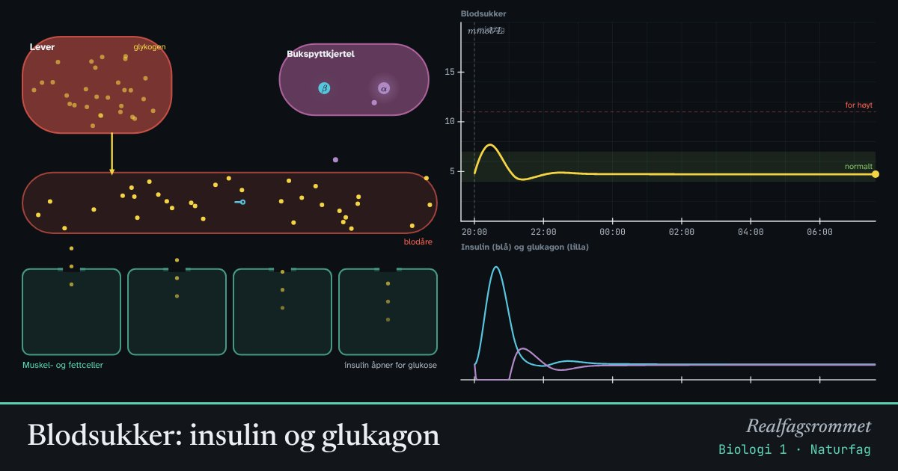

Blodsukker: insulin og glukagon
Kroppen holder blodsukkeret innenfor et smalt område. Etter et måltid skiller bukspyttkjertelen ut insulin, som får cellene til å ta opp sukker. Når blodsukkeret faller, skiller den ut glukagon, og leveren slipper ut sukker.
Start animasjonen
Formler
Om animasjonen
Dette er negativ tilbakekobling: når blodsukkeret går opp, settes det i gang noe som får det ned igjen, og omvendt. Slik holdes et stabilt indre miljø, homeostase.
Insulin virker som en nøkkel som åpner dører for glukose inn i muskel- og fettceller. Leveren lagrer overskuddet som glykogen. Glukagon får leveren til å bryte ned glykogen og slippe ut glukose.
Ved type 1-diabetes lager kroppen ikke insulin, fordi immunforsvaret har ødelagt cellene som lager det. Da må insulin tilføres. Ved type 2-diabetes virker insulinet dårligere. Livsstil, som trening og kosthold, påvirker type 2 mye.
Modellen er forenklet for å vise sammenhengene. Den kan ikke brukes til å regne ut medisinske doser.
Prøv dette
- Spis et måltid som frisk person. Hvor høyt går blodsukkeret, og hvor lang tid tar det før det er tilbake?
- Gjør det samme for type 1 og type 2. Hva er forskjellen?
- Hvorfor får man lavere blodsukker av å trene?
- Forklar hvorfor regulering av blodsukkeret er et eksempel på negativ tilbakekobling.
Kompetansemål
- Naturfag: Næringsstoffer og et variert kosthold
- Biologi 1: Livsprosesser, anatomi og fysiologi
- Biologi 1: Homeostase, hormoner og livsstil
Mer om kroppen: nerver, hormoner og immunforsvar
- Nerveimpulsen: aksjonspotensialet
- Hormoner og menstruasjonssyklusen
- Immunforsvaret og vaksiner
- Melkesyre: fra melk til yoghurt og i musklene